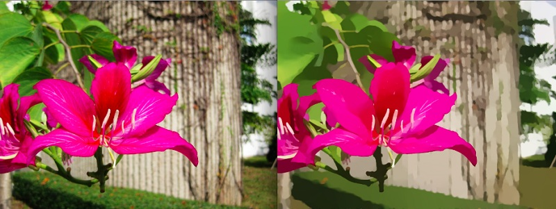

CS 205 Final Project
Image smoothing is a well-studied problem in image processing. Generally, smoothing involves creating an approximation model that attempts to capture large-scale patterns within the image, while leaving out the finer-scale structures. Image smoothing can be roughly categorized into local and global methods. Local methods, like the famous bilateral filter, generally work on local regions or individual patches, while global methods, such as total variation and WLS process the entire image at once.
For our CS 205 Final Project, we created serial and parallel implementations of a global image processing method involving L0 gradient minimization. In summary, by limiting the overall non-zero gradients between pixels of an image, the major edges can be sharpened while small-amplitude changes are minimized.
Our final project is created based on the image smoothing method described in the following paper: "Image Smoothing via L0 Gradient Minimization", Li Xu, Cewu Lu, Yi Xu, Jiayi Jia, ACM Transcations on Graphics, (SIGGRAPH Asia 2011), 2011. Link
You can also watch a 2 minute screencast about our project here. Link
